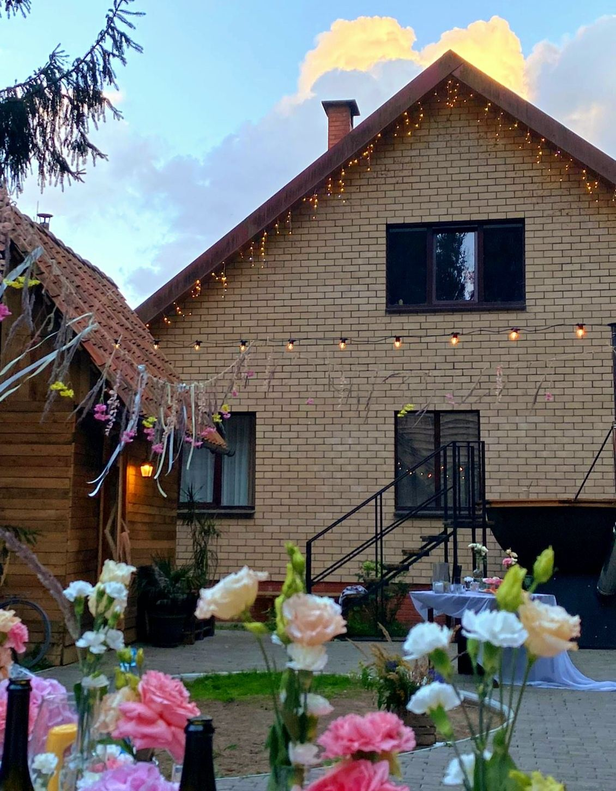
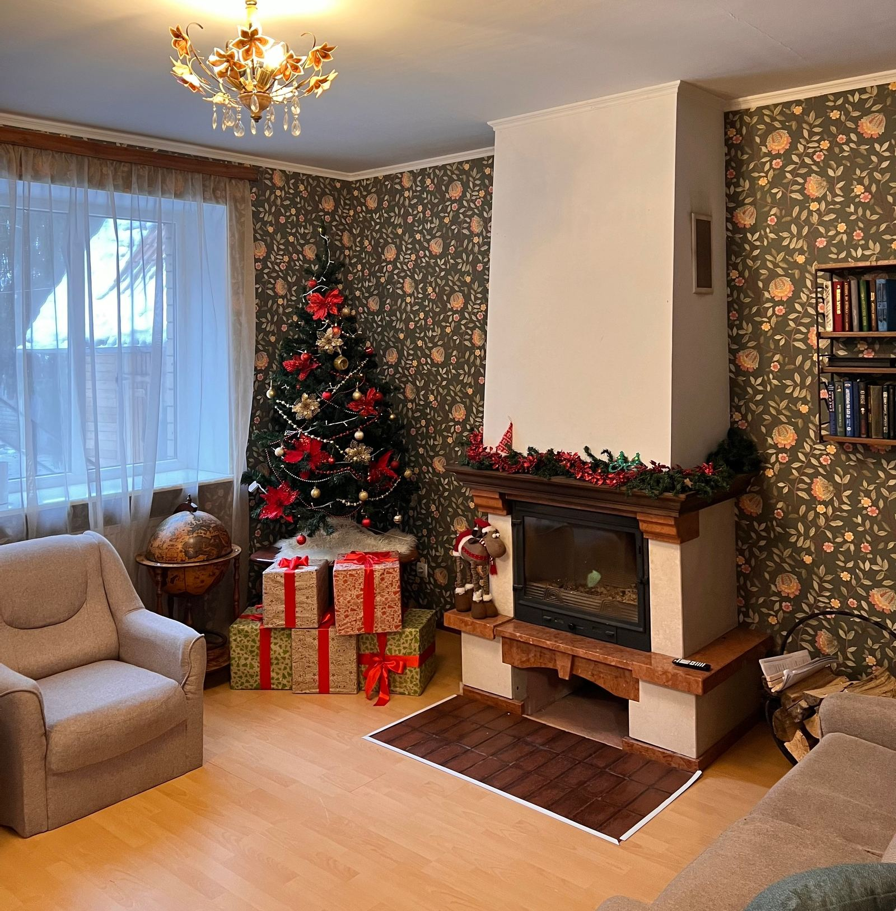
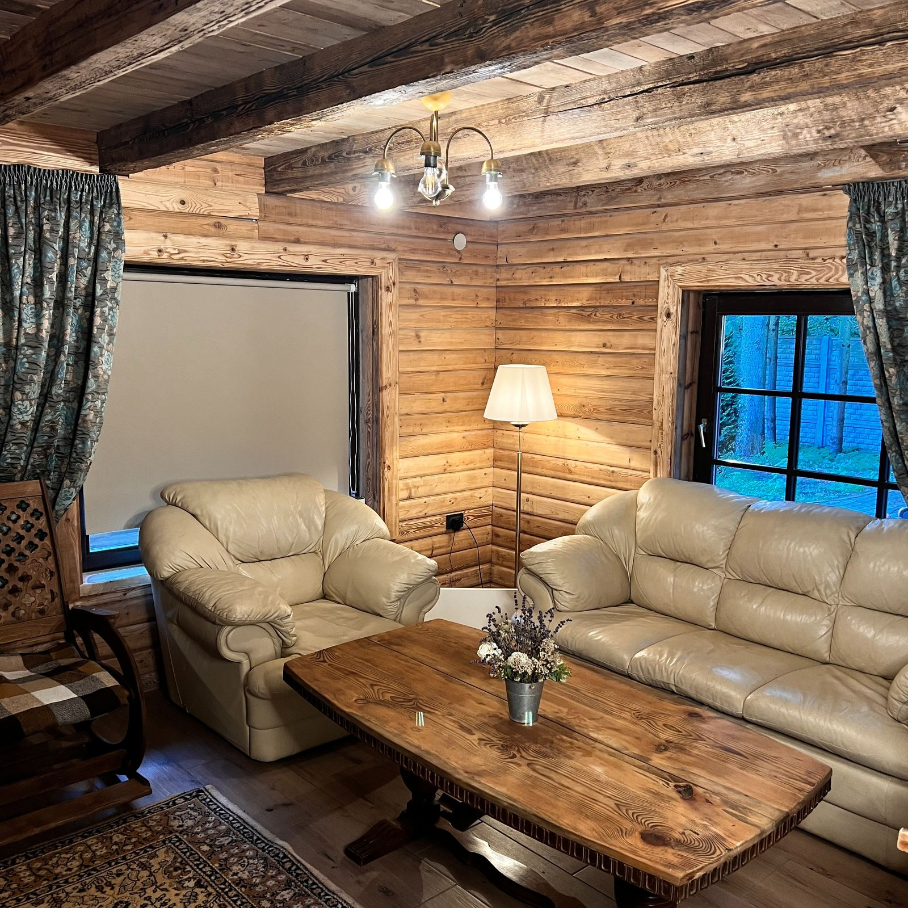
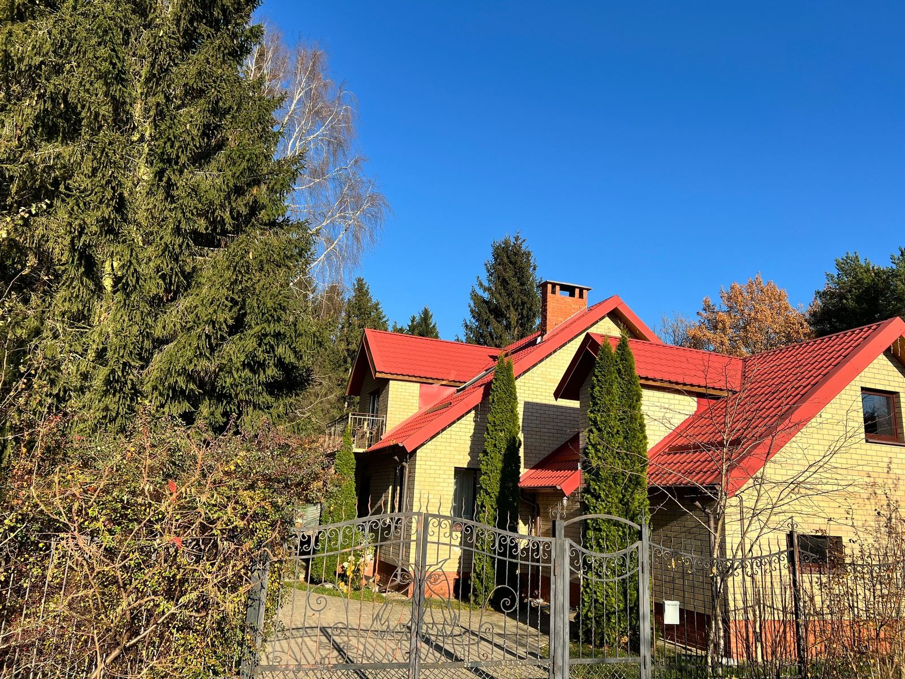
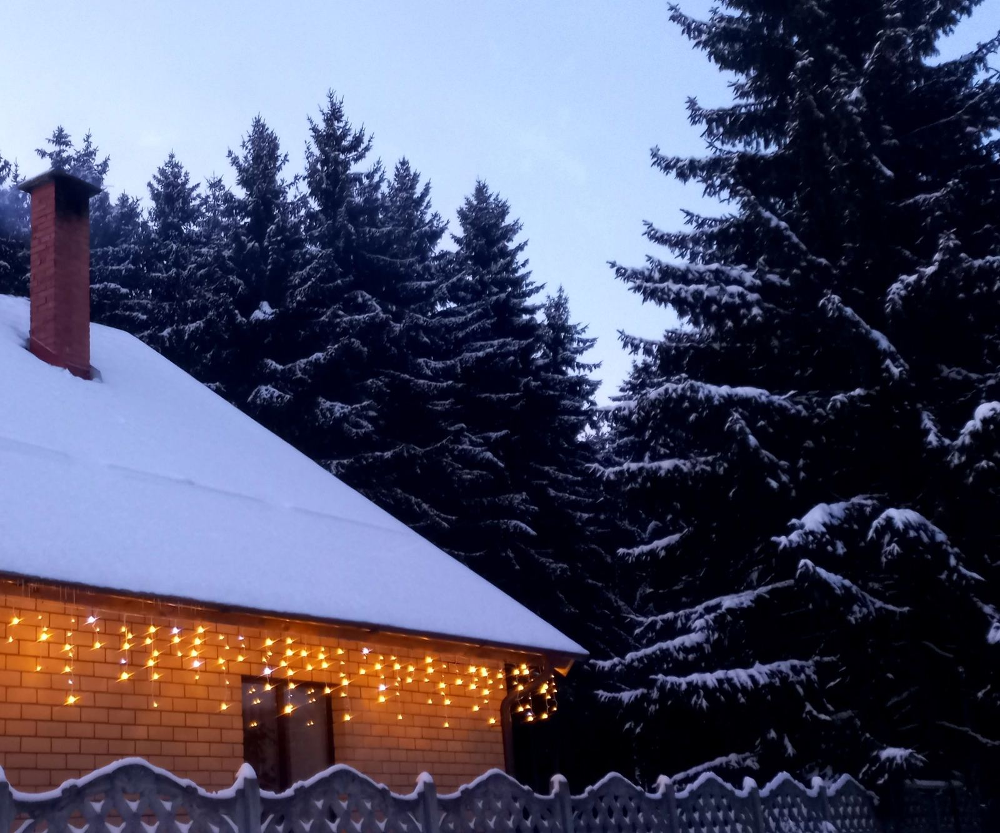
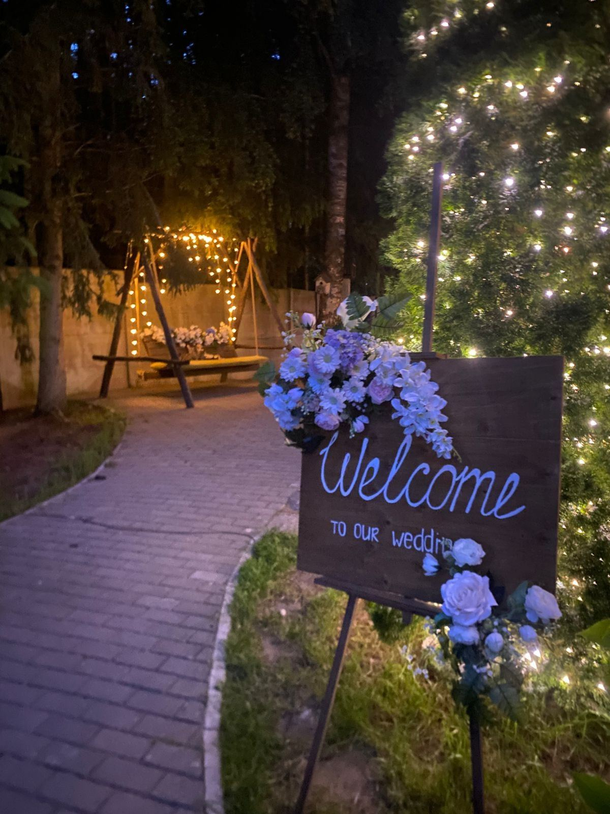
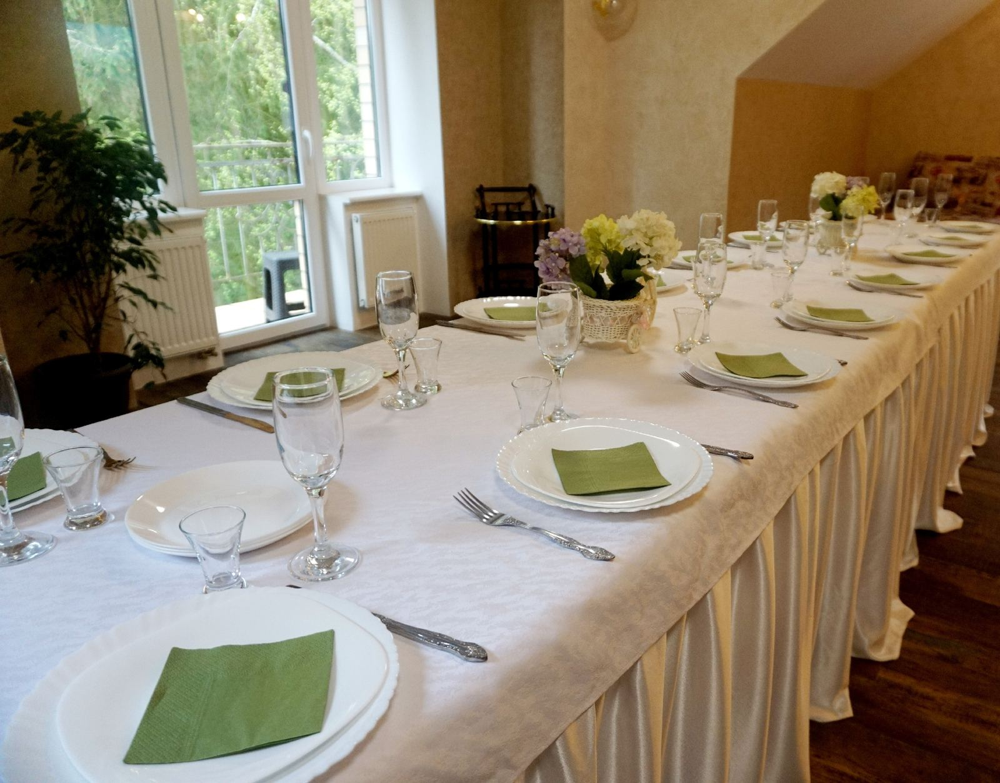
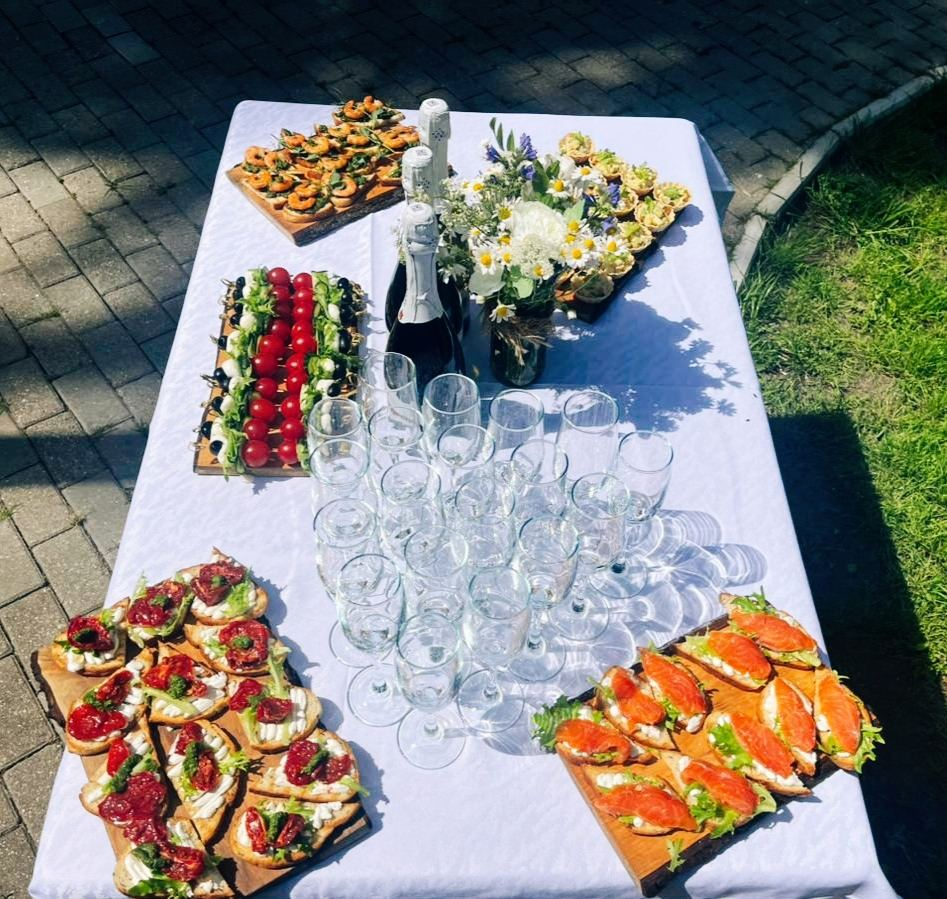

Уединение
Свой двор, своя баня, свой вечер. Если дома бронируют разные компании, мы ставим ограждение — каждая территория становится приватной.
Korschenruh — два дома в хвойном лесу в 16 км от Калининграда. Баня на дровах, сибирский чан, тёплый бассейн и своя кухня. До пляжа на заливе — 200 метров.

Сюда приезжают, чтобы выключить уведомления, услышать, как трещит камин и шумят ели, и наконец побыть с собой — или с теми, с кем по-настоящему хочется.
Свой двор, своя баня, свой вечер. Если дома бронируют разные компании, мы ставим ограждение — каждая территория становится приватной.
Ели выше крыши, лесные тропинки и залив с белым песком в двух минутах. Закаты здесь хочется смотреть молча.
Дрова, пар, горячая вода под открытым небом, хвоя и цитрус в чане. Тело отдыхает, а голова наконец успевает за ним.
Никаких чужих компаний за стенкой и в бассейне. Только ваши люди — от двоих до тридцати двух, и тёплый дом с камином.
Можно снять один из домов или всю усадьбу целиком на 32 гостя.

Кирпичный дом для большой компании и праздников: гостиная с камином, просторный зал для банкета, четыре спальни. Двор с гирляндами, беседка и сибирский чан прямо у крыльца.

Отдельный дом со своим входом — для пары, семьи или маленькой компании. Брус, старые балки, печь, кухня с изразцами и спальни под скатом крыши. Парилка — прямо в доме.
Баня, чан и бассейн бронируются отдельно на вечер — соберите свой ритуал.
Настоящий жар, веник, обливное ведро. Баня во дворе или парилка в лесном доме.
4 000 ₽ / вечер · в лесном доме 6 000 ₽
Горячая вода под открытым небом, снег на ветках, гирлянды. Наполним чан травами, еловыми лапами и апельсинами.
7 000 ₽ / вечер · наполнение +1 000 ₽
Выберите температуру под настроение — от бодрящей до «оооочень тёплой».
2 000 / 3 000 / 4 000 ₽ в сутки
Музыку на улице выключаем, а в доме вечер только начинается: камин, гитара, караоке и чай с облепихой и мёдом.
Чай 150 ₽ · гитара и караоке — в прокате
Утром — велосипеды и пляж на заливе с белым песком, днём — бассейн, вечером — ужин во дворе под гирляндами и закат над водой.

Лес становится медным, воздух — прозрачным. Самое время для прогулок, бани после дождя и долгих разговоров у огня. А с металлоискателем из проката можно поискать следы старой Пруссии.

Снег на лапах елей, гирлянда на фасаде, ёлка у камина и чан с апельсинами под падающими снежинками. Праздник, после которого никуда не нужно ехать.



Мы готовим, сервируем и оформляем — вам остаётся пригласить гостей. Банкеты, фуршеты, плов в казане на дровах, комплексные завтраки, обеды и ужины. Меню подбираем под бюджет.
По нашим расчётам, выходные в Korschenruh обходятся дешевле одного вечера в городском ресторане. Свадьбы и корпоративы обсуждаем индивидуально — после просмотра усадьбы.
Цены — из актуального меню усадьбы. Финальное меню и количество порций рассчитываем под ваше событие и бюджет.
Указаны цены будних дней. Выходные, праздники и лето рассчитываем отдельно — уточните у администратора.
Отзывы в макете — образцы. Перед запуском подставьте реальные отзывы гостей.
Усадьба Korschenruh — в посёлке Ладыгино Калининградской области, в 16 км от Калининграда. До пляжа на Калининградском заливе — 200 метров, рядом замок Бранденбург.
До 32 человек: большой дом вмещает до 24 гостей, лесной дом с баней — до 8. Можно снять один дом или всю усадьбу.
Баня на дровах — 4 000 ₽ за вечер, баня в лесном доме — 6 000 ₽. Сибирский чан на 10 человек — 7 000 ₽ за вечер, наполнение травами, еловыми ветками и апельсинами — 1 000 ₽. Бассейн: холодный 2 000 ₽, тёплый 3 000 ₽, очень тёплый 4 000 ₽ в сутки.
Да. Готовим банкеты и фуршеты, сервируем и оформляем свадьбы, юбилеи, дни рождения и корпоративы. Условия обсуждаем индивидуально после просмотра усадьбы.
Да, у усадьбы своя кухня: закуски, брускетты, канапе, салаты, горячее, десерты, домашние напитки, плов и казан-кебаб на дровах. Есть комплексные завтраки, обеды и ужины, меню собираем под бюджет.
Мы устанавливаем ограждение, и каждая территория становится приватной — у каждой компании свой двор.
Паспорт и договор. Страховой залог 10 000 ₽ возвращаем после выезда и уборки.
Указанные цены — будних дней за основной дом на 8 гостей. Стоимость в выходные, праздники и летом рассчитывается отдельно — позвоните или напишите, и мы назовём точную сумму на ваши даты.